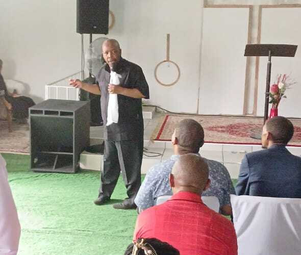
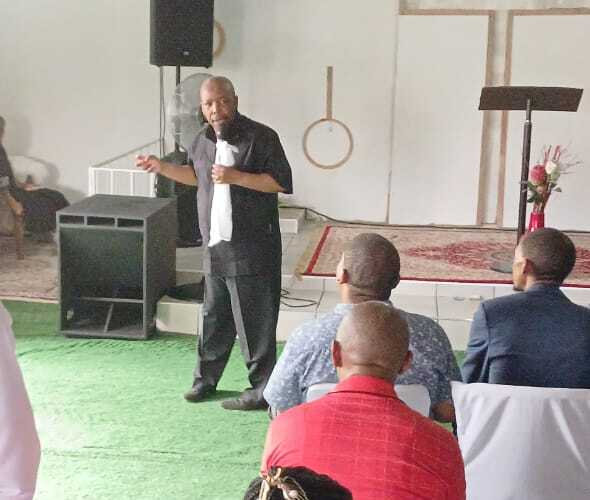
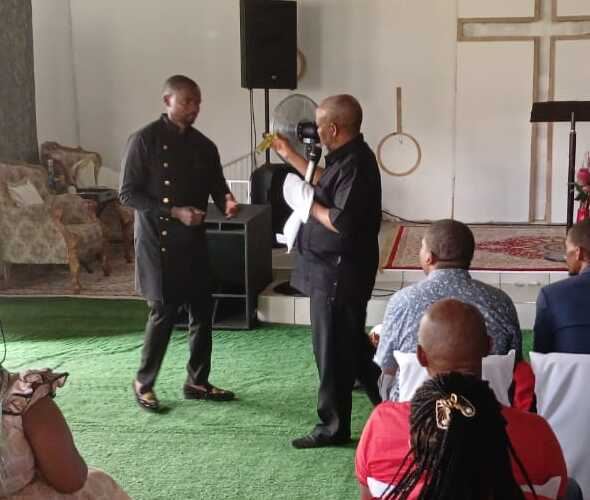
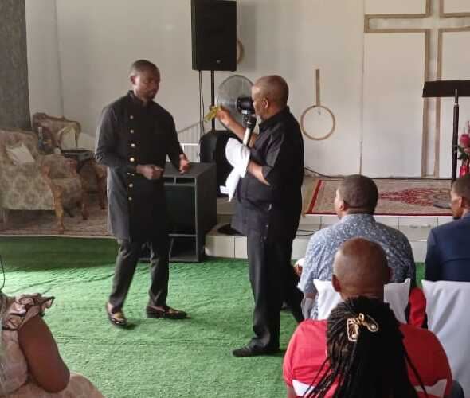

Our events are designed to inspire, uplift, and bring us closer to
God and one another. Whether it’s a powerful revival, a life-changing
conference, a special worship night, or a community outreach,
every event is an opportunity to grow in faith, experience
God’s presence, and connect with fellow believers.
We invite you to join us in these moments of transformation and renewal. Come expectant, come ready, and let’s experience God’s greatness together!
"For where two or three gather in my name, there am I with them." – Matthew 18:20
We invite you to join us in these moments of transformation and renewal. Come expectant, come ready, and let’s experience God’s greatness together!
"For where two or three gather in my name, there am I with them." – Matthew 18:20
Upcoming Events
No Upcoming Events
Previous Events

Children's Christmas Party
21 Dec 2024
On 21st December 2024, Living Faith International Ministries hosted a heartwarming Children’s Christmas Party, bringing together young hearts for a day filled with joy, laughter, and the true spirit of Christmas.
See More...


Youth Camp Day
14 Dec 2024
On December 14, 2024, the youth of Living Faith International Ministries gathered for an unforgettable Youth’s Camp Day, a time of spiritual growth, bonding, and adventure.
See More...
Divine Encounter: Crusade with Prophet L.I. Ntilane
14 November 2024
On November 14, 2024, Living Faith International Ministries was honored to host a transformative Crusade led by Prophet L.I. Ntilane, a respected servant of God known for his profound teachings and prophetic ministry.
See More...
 

 
